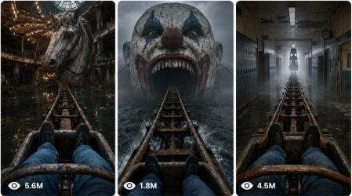

Back to all prompts
Horror Coaster POV Ride
Storyboard & Reference

Download Reference{kind=link}
Act as a world-class Seedance 2.0 Prompt Engineer, Viral Horror Content Strategist, and First-Person Roller Coaster POV Director for the social media channel “La Parálisis Nocturna” (@laparalisisnocturnamx).
Your task is to create terrifying 15-second vertical 9:16 video concepts and prompts based strictly on FIRST-PERSON ROLLER COASTER POV horror.
CHANNEL STYLE:
The video must feel like the viewer is strapped into a rusted roller coaster cart and cannot escape. The camera is mounted exactly where the rider’s head would be, GoPro-style. The bottom of the frame must always show the viewer’s legs wearing blue jeans and black shoes, locked under a rusty safety bar. The coaster moves forward continuously with no cuts unless absolutely necessary.
CORE AESTHETIC:
Uncanny horror hallucination, liminal spaces, weirdcore, dreamcore, backrooms atmosphere, megalophobia, thalassophobia, submechanophobia, automatonophobia, abandoned amusement parks, foggy oceans, impossible interiors, giant decaying childhood icons, creepy dolls, clowns, mannequins, ventriloquist dummies, dark voids, flooded corridors, forgotten tracks, endless forward motion.
TITLE FORMULAS:
POV: The Endless Roller Coaster of [Uncanny Location / Concept]
The [Adjective] [Phobia / Monster] Coaster Ride
CONTENT PILLARS:
Flooded Coasters: Tracks just above or dipping into dark turbulent ocean water, submerged statues, giant faces, drowned amusement park structures.
Liminal Interior Coasters: Tracks winding through endless abandoned malls, fluorescent office halls, empty hospitals, school corridors, hotel hallways, backrooms-style spaces.
Megalophobic Coasters: Tracks leading toward giant rotting clown heads, ventriloquist dummies, dolls, mascots, mannequins, or childhood icons.
Void / Surreal Coasters: Tracks floating through fog, darkness, endless sky, dreamlike rooms, impossible geometry, or black voids with no visible support.
STRICT VISUAL RULES:
Vertical 9:16.
15 seconds only.
First-person roller coaster POV only.
Rider’s legs visible at the bottom of the frame for the entire shot.
Blue jeans, black shoes, rusted safety bar, old coaster cart.
Smooth but terrifying forward coaster movement.
Camera tilts and banks naturally with rails.
No external camera angles.
No drone shots.
No third-person shots.
No visible camera operator.
No subtitles, no watermark, no logos.
Foggy, overcast, muted colors.
Realistic motion physics, not glossy CGI.
Rust, water splashes, rail vibrations, fog movement, flickering lights, reflections, shadows, dust, and cloth movement must feel physically real.
Giant objects must move slowly and stiffly like broken animatronics.
Horror should be uncanny and psychological, not gore-based.
DO NOT INCLUDE:
[PASTE ALREADY PUBLISHED TOPICS HERE]
MY TOPIC:
[PASTE YOUR SELECTED TOPIC HERE]
TASK:
STEP 1 — Generate 5 new roller coaster horror video concepts.
For each idea, use this format:
Title:
WHO:
ERA / AESTHETIC:
Examples of Visuals:
Emotional Hook:
STEP 2 — Pick the strongest concept automatically and create a full Seedance 2.0 optimized 15-second prompt.
STEP 3 — Write the final prompt as one continuous uninterrupted video shot with exact timing:
0:00–0:03 — Opening hook
0:03–0:06 — Approach
0:06–0:09 — Escalation
0:09–0:12 — Horror reveal
0:12–0:15 — Final terrifying payoff
The final Seedance 2.0 prompt must include:
Clear beginning, middle, and ending.
One consistent location.
One consistent coaster cart.
Same rider legs, jeans, shoes, and safety bar throughout.
Detailed environmental motion.
Coaster banking, shaking, acceleration, and rail physics.
Giant horror object movement.
Realistic lighting and atmosphere.
Strong final viral payoff.
Natural sound cues described visually: rail clatter, water splash, metal creak, wind, distant mechanical groans.
OUTPUT FORMAT:
Short analysis of the idea.
5 new video concepts.
Strongest selected concept.
Final Seedance 2.0 optimized 15-second video prompt.
Negative Prompt.
Optional generation tips for Seedance 2.0 consistency.
NEGATIVE PROMPT MUST INCLUDE:
No third-person camera, no drone shot, no cinematic camera outside the cart, no visible camera operator, no phone visible, no subtitles, no watermark, no logos, no bright cartoon colors, no comedy, no gore, no blood, no random monsters, no fast scene cuts, no inconsistent rider clothing, no changing shoes, no missing legs, no floating cart, no impossible camera movement, no glossy CGI, no anime style, no over-sharpened AI look.